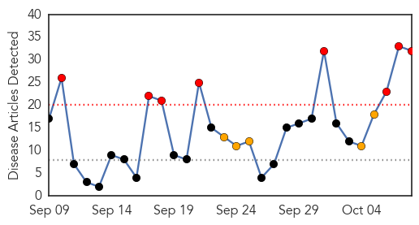
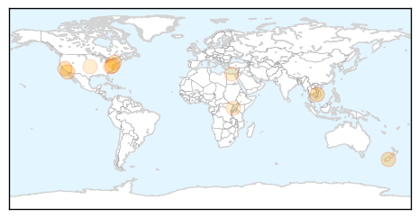

Influenza
30-Day Web Trend
8 alerts, 5 warnings

30-Day Twitter Trend
0 alerts, 0 warnings

Article Locations

Article Confidences

Top Articles:
- 0.998
- Doctors anticipate nasty flu season
- 0.993
- Low, Moderate Vaccine Efficacy Reported for 2013/14 Flu Season
- 0.992
- Medical experts tout flu shots
- 0.984
- KnightNews.com UCF Students Fight Flu Season with Free Flu Shots
- 0.980
- Lee Memorial staff, volunteers to receive flu shots - cape-coral-daily-breeze.com
- 0.973
- Urgent need for antiviral flu trials, say experts
- 0.962
- Vaccine expected to be better than last year — but you have to get shot
- 0.957
- City preschoolers will need flu shot to stay in class
- 0.941
- Flu drugs work and are needed during pandemics
- 0.941
- Ontario’s Former Chief Medical Officer: Flu Vaccine Not a Good Investment
- 0.930
- Ontario still promoting flu shots
- 0.928
- London’s Medical Officer Of Health: Getting Flu Vaccine A ‘No-Brainer’
- 0.927
- Three Rivers Public Health Department recommends getting a flu shot
- 0.920
- Strong and Kingfield Health Centers to offer flu clinics for MSAD #58 students
- 0.913
- Bird flu is important to us all
- 0.895
- Today's stories from newspapers in Flamborough
- 0.893
- Articles, event listings and opinion
- 0.893
- Articles, event listings and opinion
- 0.893
- Articles, event listings and opinion
- 0.855
- Letter To The Editor: The Budget Impasse Is Devastating Public Health Services In Illinois
- 0.841
- Bird Flu could make turkeys scarce for Thanksgiving
- 0.825
- US join hands to combat potential influenza outbreak
- 0.812
- US join hands to combat potential influenza outbreak
- 0.751
- October 8, 2015 Archives
- 0.751
- October 8, 2015 Archives
- 0.711
- Prepare to conduct flu trials in hospitals now, urge experts
- 0.691
- Today's stories from newspapers in Ottawa
- 0.691
- Today's stories from newspapers in Ottawa
- 0.691
- Today's stories from newspapers in Ottawa
- 0.691
- Today's stories from newspapers in Ottawa
- 0.681
- ON CAMPUS: Refreshing nursing skills
- 0.663
- Mass vaccination exercise planned
Top Tweets:
-
No tweets found for Oct 08, 2015
Measles
30-Day Web Trend
0 alerts, 0 warnings

30-Day Twitter Trend
0 alerts, 0 warnings

Article Locations
Article Confidences

Top Articles:
- 0.976
- Cambodia confirms first measles case after elimination - Xinhua
- 0.930
- 1 in 8 U.S. Kids Not Protected Against Measles
- 0.911
- Measles outbreaks looming if vaccination rates don’t go up, researchers warn
- 0.854
- 9 Million US Kids at Risk for Measles
- 0.854
- Positive Measles Case Confirmed; Possible Exposure Locations...
- 0.835
- News Scan for Oct 08, 2015
- 0.781
- SCOTUS Refuses to Hear Mandatory Vaccine Case – Now Fourth Amendment at Stake in New York
- 0.592
- Fairfax County child comes down with measles
- 0.591
- Feature: Uganda launches nationwide immunization to battle its top killer disease --China Economic Net
- 0.552
- Top gov't scientists say no to vaccines for their kids
Top Tweets:
-
No tweets found for Oct 08, 2015